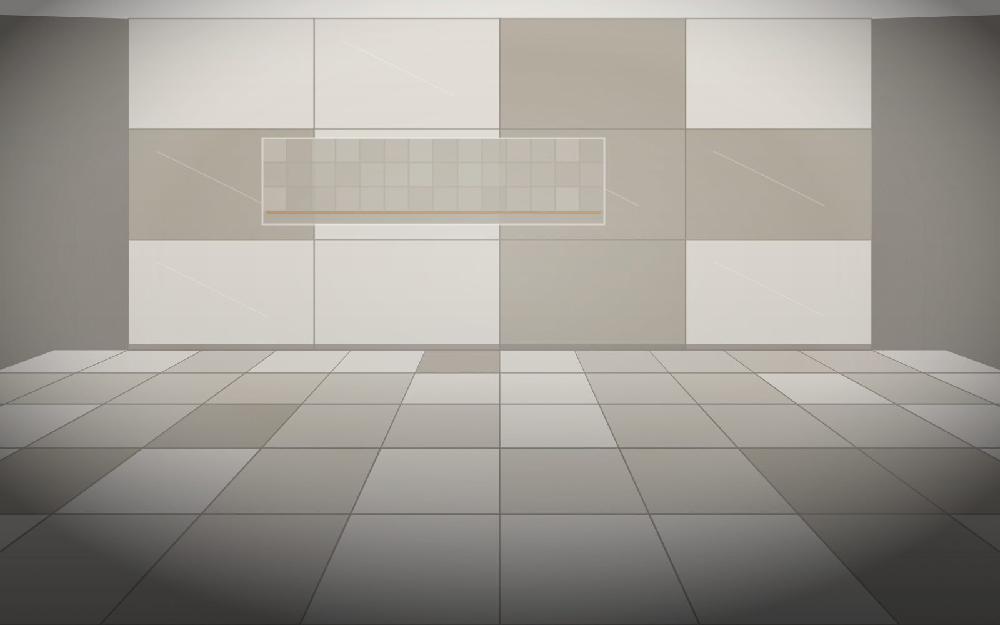
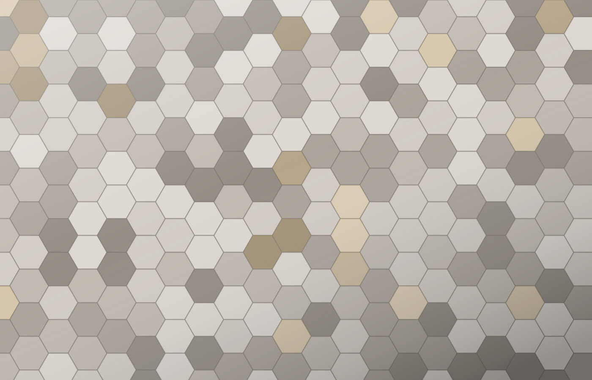
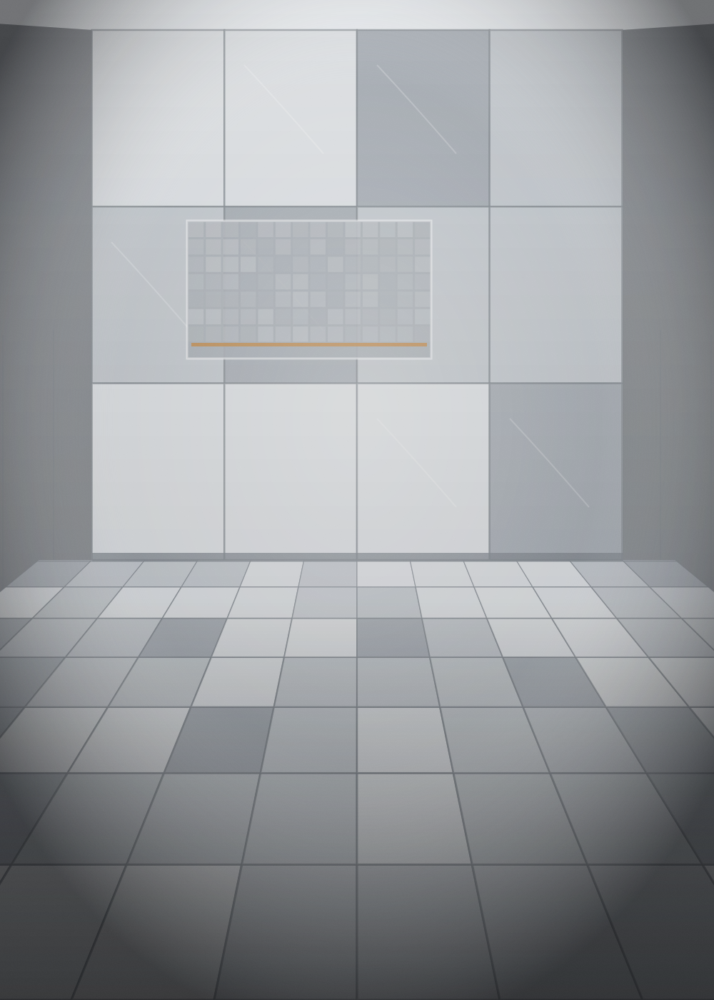
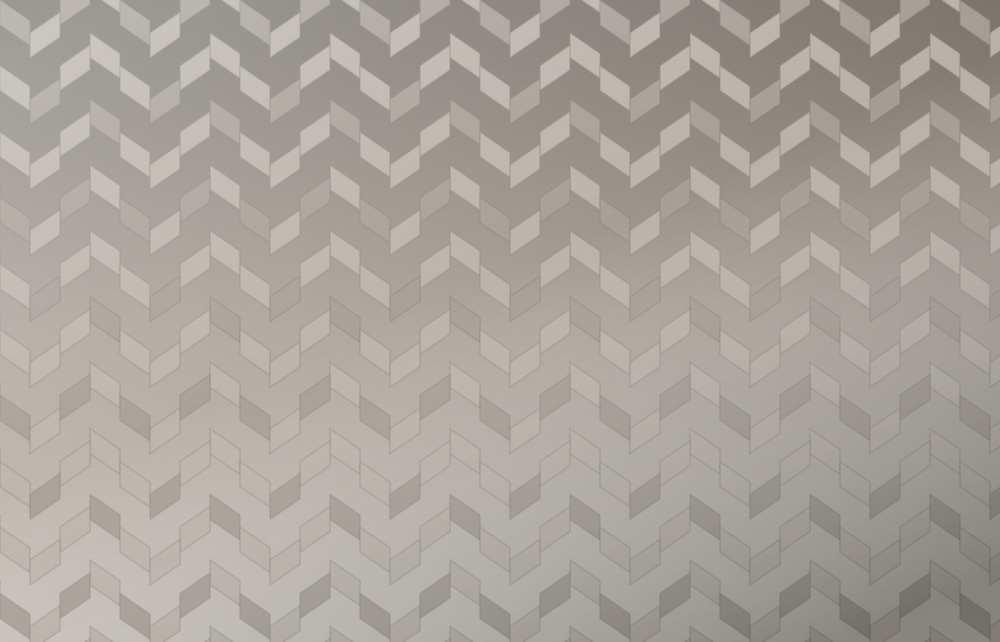
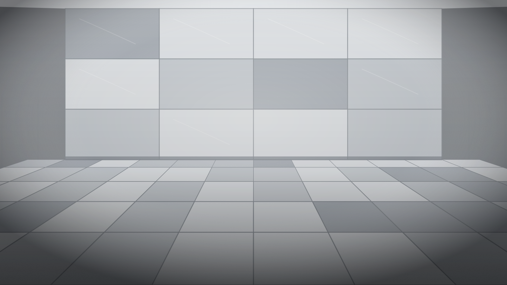

Préparation des surfaces
Planéité, solidité du support, membrane d’étanchéité lorsque requis. Une pose ne rattrape jamais un support négligé.

Notre spécialité
« Le carrelage demande précision, préparation et souci du détail. Construction AVQ inc. accorde une importance particulière à la qualité de la préparation, à l’alignement, aux coupes, aux joints et à la finition afin d’obtenir un résultat durable et esthétique. »

Ce que nous posons
Chaque matériau a ses exigences. Le format, l’épaisseur, la porosité et l’usage de la pièce dictent le support, la colle, la largeur de joint et la méthode de pose.
La méthode
Planéité, solidité du support, membrane d’étanchéité lorsque requis. Une pose ne rattrape jamais un support négligé.
Le point de départ de la pose est décidé avant la première tuile, pour maîtriser les coupes visibles et les alignements entre les plans.
Coupes nettes autour des drains, des sorties, des angles et des changements de matériaux.
Largeur, couleur, régularité et traitement des joints de mouvement, selon le format et l’usage de la surface.
Manutention, double encollage et nivellement adaptés aux dalles de grande dimension.
Profilés, angles, transitions et retouches finales — la partie du travail qui se voit tous les jours.
Aperçu




Visuels d’illustration. Les photos de projets réels sont présentées dans la section Réalisations.
Rénovation
Une salle de bain vieillissante, un plancher fissuré, des joints qui se dégradent : la reprise d’une surface existante commence par un diagnostic du support.
Avant de proposer une solution, nous vérifions l’état du sous-plancher ou du mur, la présence d’humidité et la cause réelle du problème. Reposer du carrelage sur un support défectueux ne fait que reporter la réparation.
Parlons de votre projet
Que vous planifiiez une rénovation, un projet de construction, des travaux de carrelage ou que vous ayez besoin d’une gestion efficace de votre chantier, Construction AVQ inc. est là pour vous accompagner.